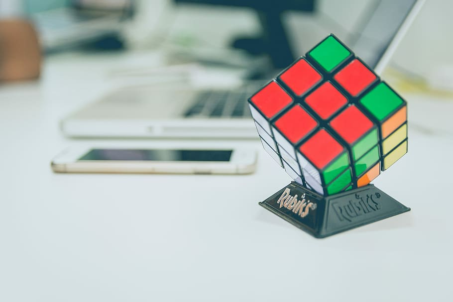

The Rubik's Cube is a 3-D combination puzzle invented in 1974 by Hungarian sculptor and professor of architecture Ernő Rubik. Originally called the Magic Cube, the puzzle was licensed by Rubik to be sold by Ideal Toy Corp. ... For the puzzle to be solved, each face must be returned to have only one colour.